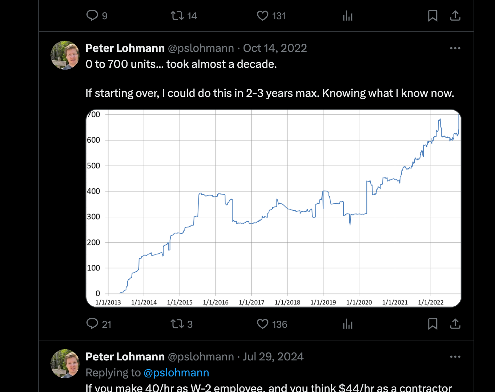
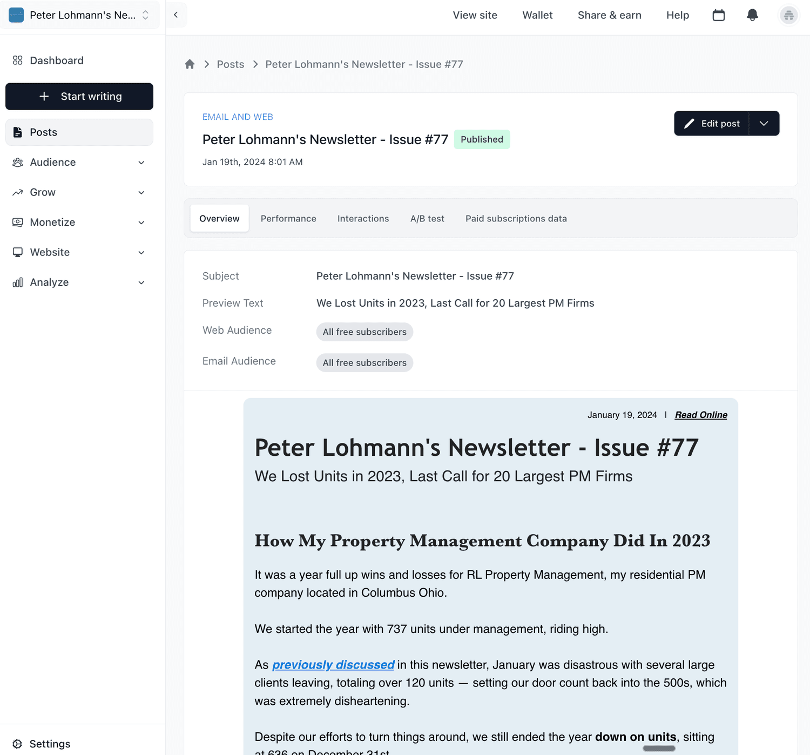

Four years ago, I started a property management newsletter with zero subscribers.
No email list. No sponsors. No publishing schedule. Just a vague itch to try long-form content and a desire to own my distribution instead of relying entirely on social algorithms.

Why the Newsletter Exists
The idea wasn’t to “start a newsletter.” It was to build a place where my thinking could live.
I’d been inspired by Moses Kagan’s real estate blog - how it acted like a digital paper trail of his ideas, his evolution, and how he thought about deals. It gave readers a clear sense of how he approached the game. I wanted to create something like that for the property management world.
Not to go viral. Not for lead gen. Just a consistent, public way to document what I was learning while trying to run and grow a property management company.
At the time, there wasn’t much in the way of real, systems-focused content for PM operators. Most of what I found was either surface-level or felt like marketing dressed up as advice.
So I started writing the kind of property management blog I wished existed: practical, honest, and grounded in the day-to-day. A place for systems thinking, lessons learned, and real-world experiments.
And it didn’t take long for things to get interesting.
The Early Days: No Schedule, Just Stories
Those first few issues? Pure behind-the-scenes.
I wrote about what was happening inside RL Property Management: hiring challenges, maintenance experiments, and lease renewal systems gone wrong (ask me how I know). It was messy and honest. Just me, writing to whoever might be listening.
I didn’t import a contact list or spin up a lead magnet. There was no automation. No “growth strategy.” Just a link in my Twitter bio and a quiet hope that a few people would find it useful.
Every time I hit “Publish,” I’d share it by hand on social and wait to see if anyone replied.
If you’re thinking about starting a property management newsletter from scratch, that’s how it looked. No playbook. Just stories and systems, one issue at a time.
The Newsletter Evolves
As more people subscribed, the feedback started rolling in… and it changed everything.
Readers would reply with questions, insights, even a few “this helped me fix a broken process in my company” messages. That feedback loop became the compass. I started experimenting with new sections: industry news, tools I was using, PM companies for sale. If something got clicks or replies, I’d double down. If it didn’t? I cut it.

And guess what? Open rates are consistently 60–75%. Turns out, the best property management content strategy is just… write stuff people actually want to read.
Why It Still Matters (and Why I Keep Writing It)
There’s no real playbook for how to scale a property management company.
Sure, there are podcasts, webinars, Facebook groups, but most of it is scattered or surface-level. What I needed (and what I’m still trying to build) is something deeper: a consistent, long-form record of what actually works when you’re in the trenches.
Writing forces clarity. Sharing builds trust. And over time, that builds a real community of operators who think critically and push each other forward.
That’s why I still write it, week after week. And when I see someone else launch their own property management newsletter? I’m the first to subscribe and link to it.
If one idea helps you fix a process, hire smarter, or just breathe easier this week… that’s enough reason to keep going.
Want to Think Better About Property Management?
Every week, I send out a no-fluff newsletter packed with real-world insights for property management professionals.
It’s where I share:
PM industry news and trends
Companies for sale (yes, real listings)
Deep dives on systems and ops
Tools I actually use
If you’re trying to scale a PM company, stay ahead of the curve, or just want to run a tighter ship, my newsletter is for you.
Join 20,000+ property management operators, owners, investors, and vendors who read it every week.